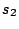
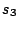

|
Keywords: Reconstruction of ancestral sequences, multiple alignment, phylogeny, affine gap cost function
Given a multiple alignment of complete sequences, a phylogeny relating the sequences, and an affine gap cost function, we study how to interpret gap symbols in terms of indels. Taking a graph theoretical approach we present and formally prove an algorithm which optimally solves the problem with respect to the given gap cost function. As far as we know, our algorithm is the first feasible solution to this problem, while many other researchers have considered related problems. E.g., Altschul showed that a so-called generalized affine gap cost function may perform better than a normal affine function when used for determining biological relationships between sequences [2]. Stoye gave a divide-and-conquer algorithm which efficiently finds a near-optimal multiple alignment of a number of sequences, with an arbitrary gap cost function. Recently, Althaus et al. devised an algorithm based on integer linear programming which can find the optimal multiple alignment of k sequences given an arbitrary gap cost function, if the sequences are of moderate length [1].
If only indels of length one are allowed, no
indels have had an effect across columns in the alignment; i.e. the
gaps in one column appeared independently from gaps in other
columns. Hence each column can be treated independently and we can
place the gaps ``as high as possible'' in the tree, hereby assuming
that indels have happened as early as possible in the evolution
with respect to the given phylogeny. This follows the parsimony
principle: When all indels have the same length (namely 1) the only
parameter to minimize is the number of indels; i.e. fewer
indels are always cheaper than many indels. However, real
biological sequences are also subject to longer indels. When longer
indels are allowed the problem becomes non-trivial as can be seen
from Figure 1: There are gap
symbols in sequences  and . The gaps partly overlap and they can be explained in
two ways: Either (1) Two long indels have occurred -- one
somewhere on the evolutionary path between  and , and one on the path between
and , and one on the path between
 and -- and so
and -- and so
 , the closest common relative of
and , has no gaps;
or (2) Three short indels have occurred: one on the path
between
, the closest common relative of
and , has no gaps;
or (2) Three short indels have occurred: one on the path
between  and
and  so that
so that
 has gap symbols in the overlap interval
where both and
also have gaps, one between
has gap symbols in the overlap interval
where both and
also have gaps, one between  and accounting for the rest of 's
gaps, and one between
and accounting for the rest of 's
gaps, and one between  and accounting for the rest of 's
gaps.
and accounting for the rest of 's
gaps.
![\begin{figure} \centering \subfigure[Tree]{ \parbox[c][0.13\textwidth]{0.... ...x]{3em}{0.2ex} \\ [.5ex] \end{tabular}} } \vspace{-4mm} \end{figure}](img6.png)
|
If we solved the problem the same way as when indels have length one (using a variant of the Fitch-Hartigan-Sankoff algorithm) we would place the indels as high (i.e., as far from the leaves) as possible in the tree, and so we would choose explanation 2 in Figure 1(c) -- but that means that three indels have occurred whereas choosing explanation 1 means only two. On the other hand, since now both the number and length of the indels may vary between possible explanations, it is no longer obvious that the most parsimonious explanation is simply the one with the fewest indels. Whether two long indels are cheaper than three short ones depends on the chosen gap penalty function.
We propose a framework in which we represent the gaps in the multiple alignment in a so-called gap graph. A gap graph vertex consists of a subtree of the phylogeny and an interval of the alignment, such that all leaf sequences in the subtree have gaps in the corresponding interval. There is an edge between two vertices in the gap graph if their intervals are consecutive and their subtrees are not disjoint. Different edges are used depending on the intersection of the vertex subtrees. In other words, if two vertices share an edge, an indel may have stretched across the associated intervals to cause gaps in the two associated subtrees.
We go on to formally prove some important properties of gap graphs. Characterizing vertices by the type of their incident edges, we show that some types of vertices correspond directly to (optimal) indels. We also use the gap graph properties to show which indels can be optimal at all. We then present an algorithm, grounded in these theoretical results, that finds the most parsimonious explanation of the gaps in terms of indels. We are currently implementing the algorithm; its worst-case running time is exponential in the length of the alignment, but our theoretical results prune the set of possible explanations greatly, and further we expect real alignments to be of such a nature that the running time will be feasible. Our algorithm could also be coupled with various optimization techniques (dynamic programming, simulated annealing, or genetic algorithms) to find a good multiple alignment since the algorithm in effect ranks the alignment using the gap cost function as object function.